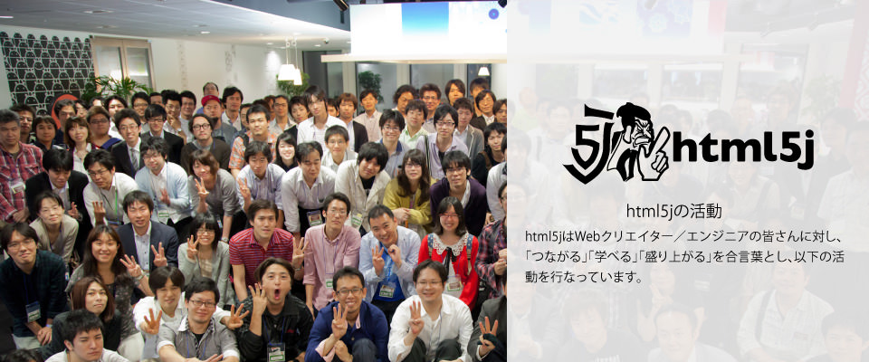
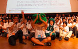
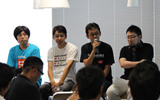

- 
html5jは、HTML5などのWebプラットフォーム技術を使った「ものづくり」に関わる、すべての人々を応援する非営利・中立のコミュニティです。私たちは、日本のWebクリエイター／エンジニアのスキル向上をお手伝いして、日本が世界のWebシーンをリードするような存在になることを心より願っています。
html5jはWebクリエイター／エンジニアの皆さんに対し、「つながる」「学べる」「盛り上がる」を合言葉とし、以下の活動を行なっています。
Web開発に関する話題について質問したり、共有したりするためのメーリングリストです。また、勉強会の告知なども行なっています。
html5jメーリングリストに参加する 東京で開催しているhtml5j主催の勉強会です。2009年11月よりスタートし、現在では毎回100人近くもの方にご参加いただけるまでになりました。
勉強会の開催案内については、html5jメーリングリストやhtml5jスタッフブログなどから行なっています。
トピックを絞った「部活動」も行なっています。各部活動の勉強会告知や、トピックを絞った議論は基本的にhtml5jメーリングリストで行われています。
html5jメーリングリスト
（Googleグループに移動）
投稿ルール
HTML5とか勉強会
部活動
HTML5とか勉強会や部活動のイベント以外に、イベントの企画・運営も行っています。
また、地域のWeb開発コミュニティが開催するイベントに参加させていただくこともあります。html5jでは主催に限らず、Web開発に関する勉強会・セミナーは積極的に応援したいと考えています。
2011年より、より多くの人がつながり、学べ、盛り上がるためのカンファレンスを開催しています。
2013年11月開催。30セッション、1300人参加という過去最大規模のイベントになりました。
2012年9月開催。html5j単独主催、のべ1000人の方に参加いただきました。
2011年8月開催。Googleと共催したhtml5j初のカンファレンスです。
2013年6月8日に開催されたWeb開発関連イベントを「<htmlday>」としてまとめ、日本全国で盛り上がりました。
HTML5 Conference
HTML5 Conference 2013
HTML5 Conference 2012

Chrome+HTML5 Conference

<htmlday>